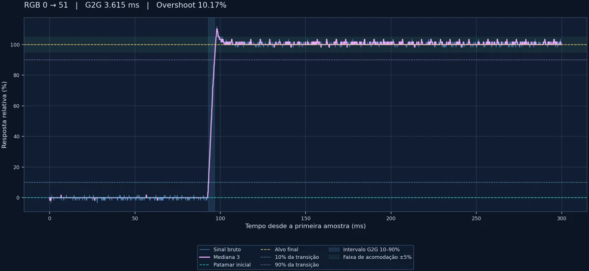

IFPR CAMPUS CAMPO LARGO
Projeto Íris
Instrumento de medição óptica desenvolvido no curso técnico em Automação Industrial do Instituto Federal do Paraná. O Íris registra como a luz emitida pelo monitor muda quando os pixels passam de um tom de cinza para outro.
O problema
Uma especificação isolada de tempo de resposta não mostra como o painel se comporta em diferentes transições. O overdrive pode acelerar a mudança e também acentuar os picos que causam rastros na imagem.
O catálogo associa cada resultado ao monitor, à taxa de atualização, ao overdrive e às condições de medição.
O instrumento
Dois fotodiodos BPW34 captam a luz. O amplificador MCP6022 converte a corrente em tensão. O MCP3208 digitaliza o sinal e o ESP32 envia as amostras e seus tempos ao computador por USB.
O Íris Desktop apresenta o estímulo, analisa a resposta em Python, mantém os dados locais e prepara o relatório para o site.
Como ler uma medição

- GtG é o intervalo entre 10% e 90% da mudança medida.
- Overshoot e undershoot indicam quanto a resposta ultrapassou o alvo, em relação à amplitude da transição.
- Acomodação indica quando a resposta permaneceu na faixa definida em torno do alvo, se o sinal permitir determinar esse ponto.
IDMS e VESA CTS orientaram o método. Os resultados descrevem resposta óptica relativa nas condições ensaiadas.
Como medir
- Conecte o Íris por USB e posicione a sonda no centro do estímulo.
- No Desktop, selecione a tela e registre modelo, frequência, overdrive e condições.
- Inicie a medição e revise as transições, as matrizes e as capturas indisponíveis.
- Salve o relatório ou publique o ensaio para compartilhar o link.
Equipe
André Ferrer Woellner Hoffmann, Andrei Felipe Pereira Ramos da Silva e Guilherme de Moura Valentim Bello.
Orientação de Beatriz dos Santos Pês, Diego Tefili e Marcos Santos Hara. IFPR Campus Campo Largo.